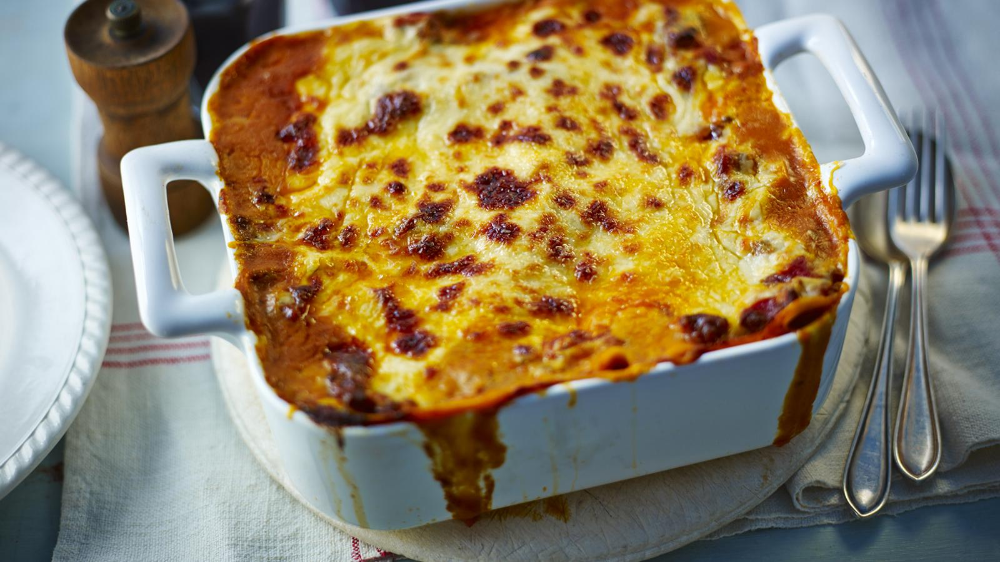

Home
Garfield's Lasagna

Description
A delicious lasagna recipe inspired by Garfield's love for lasagna. This recipe is perfect for a hearty meal and is sure to satisfy your cravings.
Ingredients
- 12 lasagna noodles
- 1 lb ground beef
- 2 cups ricotta cheese
- 1 cup mozzarella cheese
- 1/2 cup parmesan cheese
- 2 eggs
- 2 cloves garlic, minced
- 1 jar marinara sauce
Instructions
- Cook the lasagna noodles according to package instructions.
- In a large skillet, brown the ground beef and drain excess fat.
- Add the garlic and marinara sauce to the beef and simmer for 10 minutes.
- In a mixing bowl, combine the ricotta cheese, eggs, and half of the mozzarella cheese.
- Preheat the oven to 375°F (190°C).
- Layer the lasagna noodles, meat sauce, and cheese mixture in a baking dish.
- Sprinkle the remaining mozzarella cheese on top.
- Bake for 30 minutes or until bubbly and golden brown.